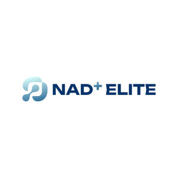

Trade Mark Journal No.2025/025 20 June 2025
UK00004210767 29 May 2025 (5,35)

- Class 5
- Nutraceuticals for use as a dietary supplement; Dietary supplement drinks; Vitamin supplement patches; Dietary supplements; Vitamin supplements; Nutritional supplements; Calcium tablets as a food supplement; Dietary supplement drink mixes; Probiotic supplements; Dietary supplements consisting of vitamins; Colostrum supplements; Flaxseed dietary supplements; Nutritional supplement meal replacement bars for boosting energy; Zinc supplement lozenges; Homeopathic supplements; Calcium supplements; Propolis dietary supplements; Dietary supplements for medical use; Herbal supplements; Chlorella dietary supplements; Prebiotic supplements; Anti-oxidant supplements; Dietary supplements in powder form; Powdered nutritional supplement drink mix; Nutritional supplements for veterinary use; Dietary and nutritional supplements; Protein supplement shakes; Nutritional supplement energy bars; Lecithin dietary supplements; Zinc dietary supplements; Ground flaxseed fiber for use as a dietary supplement; Mineral dietary supplements; Dietary supplements consisting primarily of magnesium; Protein supplements; Liquid dietary supplements; Nutritional supplements consisting primarily of magnesium; Food supplements; Protein dietary supplements; Dietary supplements consisting primarily of calcium; Enzyme dietary supplements; Nutritional supplements consisting primarily of calcium; Mineral nutritional supplements; Feed supplements for veterinary use; Liquid nutritional supplements; Dietary food supplements; Yeast dietary supplements; Liquid vitamin supplements; Linseed dietary supplements; Alginate dietary supplements; Vitamin and mineral supplements; Acai powder dietary supplements; Nutritional supplements consisting primarily of zinc; Casein dietary supplements; Anti-oxidant food supplements; Flaxseed oil dietary supplements; Food supplements for dietetic use; Powdered nutritional supplement energy drink mix; Pollen dietary supplements; Glucose dietary supplements; Wheat dietary supplements; Albumin dietary supplements; Protein powder dietary supplements; Nutritional supplements consisting primarily of iron; Dietary supplements consisting primarily of iron; Dietary supplements for pets; Food supplements for veterinary use; Powdered fruit-flavored dietary supplement drink mix; Vitamin and mineral food supplements; Dietary supplements with a cosmetic effect; Dietary supplements for infants; Nutritional supplements consisting of fungal extracts; Nutritional supplements for livestock feed; Vitamin supplements for animals; Dietary food supplements used for modified fasting; Whey protein dietary supplements; Vitamin and mineral supplements for pets; Dietary supplements for animals; Liquid herbal supplements; Herbal dietary supplements for persons special dietary requirements; Dietary supplements for humans; Soy isoflavone dietary supplements; Fodder supplements for veterinary purposes; Dietary supplements and dietetic preparations; Health food supplements made principally of vitamins; Vitamin preparations in the nature of food supplements; Bee pollen for use as a dietary food supplement; Food supplements for medical purposes; Soy protein dietary supplements; Brewer's yeast dietary supplements; Health-aid foods supplement containing red ginseng; Food supplements in liquid form; Mineral dietary supplements for animals; Dietary supplements and dietetic preparations containing CBD oil; Nutritional supplements made of starch adapted for medical use; Mineral dietary supplements for humans; Linseed oil dietary supplements; Activated charcoal dietary supplements; Dietary supplemental drinks; Food supplements for non-medical purposes; Folic acid dietary supplements; Food supplements for sportsmen; Dietary supplements promoting fitness and endurance; Health-aid foods supplements containing ginseng; Dietary supplements for pets in the nature of a powdered drink mix; Dietary supplements for controlling cholesterol; Mineral supplements for feeding livestock; Medicated food supplements; Dietary supplements for humans not for medical purposes; Health food supplements made principally of minerals; Health food supplements for persons with special dietary requirements; Ganoderma lucidum spore powder dietary supplements; Royal jelly dietary supplements; Protein supplements for animals; Preparations for supplementing the body with essential vitamins and microelements; Dietary pet supplements in the form of pet treats; Natural dietary supplements for treating claustrophobia; Delivery agents in the form of coatings for tablets that facilitate the delivery of nutritional supplements; Fitness and endurance supplements; Pine pollen dietary supplements; Diet capsules; Multivitamins; Food supplements consisting of trace elements; Anti-oxidants for dietary use; Wheat germ dietary supplements; Food supplements consisting of amino acids; Delivery agents in the form of dissolvable films that facilitate the delivery of nutritional supplements; Vitamin supplements for use in renal dialysis; Flaxseed meal for pharmaceutical purposes; Nutritional drink mix for use as a meal replacement; Medicated supplements for animal feedstuffs; Strengthening supplements containing parapharmaceutical preparations for prophylactic purposes and for convalescents; Supplementary fodder mixes; Multi-vitamin preparations; Antibiotic food supplements for animals; Pharmaceuticals; Homeopathic pharmaceuticals; Injectable pharmaceuticals; Pharmaceutical drugs; Anti-diabetic pharmaceuticals; Antidiabetic pharmaceuticals; Antibacterial pharmaceuticals; Cardiovascular pharmaceuticals; Ocular pharmaceuticals; Pharmaceutical preparations and substances for use in oncology; Pharmaceutical preparations and substances for use in urology; Dermatological pharmaceutical substances; Chemicals for pharmaceutical use; Pharmaceutical preparations and substances for use in gynecology; Astringents [pharmaceutical]; Pharmaceutical creams; Gelatin capsules for pharmaceuticals; Pharmaceutical preparations and substances; Dermatological pharmaceutical products; Pharmaceuticals for the treatment of erectile dysfunction; Lotions for pharmaceutical purposes; Pharmaceutical implants; Pharmaceuticals and natural remedies; Pharmaceutical preparations for use in oncology; Pharmaceutical preparations for use in urology; Pharmaceutical products for the treatment of cancer; Pharmaceutical sweets; Ointments for pharmaceutical purposes; Analgesics for pharmaceutical use; Empty capsules for pharmaceuticals; Pharmaceutical preparations and substances for use in the field of anesthesia; Pharmaceutical products for the treatment of depression; Antibacterials for pharmaceutical use; Cytostatics for pharmaceutical purposes; Pharmaceutical preparations and substances for the treatment of cancer; Food esters for pharmaceutical purposes; Pharmaceutical preparations for inhalers; Iodine for pharmaceutical purposes; Implantable medicines; Elixirs [pharmaceutical preparations]; Pharmaceutical products for the treatment of bone diseases; Pharmaceutical preparations for animals; Pharmaceutical preparations and substances for the treatment of gastro-intestinal diseases; Pharmaceutical preparations for use in hematology; Pharmaceutical preparations; Pharmaceutical products and preparations for chloasma; Alkaloids used for pharmaceutical purposes; Iodides for pharmaceutical purposes; Sulphonamides [medicines]; Sulphonamides as medicines; Phosphates for pharmaceutical purposes; Synthetic peptides for pharmaceutical purposes; Pharmaceutical products for the treatment of infectious diseases; Pharmaceutical antiallergic preparations and substances; Sandalwood oil for medical, pharmaceutical and veterinary purposes; Capsules made of dendrimer-based polymers, for pharmaceuticals; Pharmaceutical preparations for use in dermatology; Pharmaceutical products for ophthalmological use; Alginates for pharmaceutical purposes; Anti-epileptic pharmaceutical preparations; Pharmaceutical solutions used in dialysis; Alginate tablets for pharmaceutical purposes; Pharmaceutical products for treating respiratory diseases; Pharmaceutical preparations and substances for the prevention of cancer; Cellulose for pharmaceutical purposes; Pharmaceutical preparations for use in chemotherapy; Alcohol for pharmaceutical purposes; Pharmaceutical compositions; Sulfonamides [medicines]; Bromine for pharmaceutical purposes; Lotions (Tissues impregnated with pharmaceutical -); Tissues impregnated with pharmaceutical lotions; Pharmaceutical products for the treatment of viral diseases; Pharmaceutical preparations for use in ophthalmology; Capsules for pharmaceutical purposes; Syrups for pharmaceutical purposes; Injectable pharmaceuticals for treatment of anaphylactic reactions; Filled syringes for medical purposes [containing pharmaceuticals]; Pharmaceutical preparations for veterinary use; Pharmaceutical skin lotions; Pharmaceutical preparations for treating chemical imbalances; Parenteral anti-epileptic pharmaceutical preparations; Ethers for pharmaceutical purposes; Cardiovascular pharmaceutical preparations; Pharmaceutical lipsalves; Pastilles for pharmaceutical purposes; Menthol for pharmaceutical purposes; Liquorice for pharmaceutical purposes; Esters for pharmaceutical purposes; Eucalyptol for pharmaceutical purposes; Yeast for medical, veterinary or pharmaceutical purposes; Propolis for pharmaceutical purposes; Gentian for pharmaceutical purposes; Ethanol for pharmaceutical purposes; Anti-bacterial pharmaceutical preparations; Phenol for pharmaceutical purposes; Pharmaceutical preparations for animal skincare; Pharmaceutical cough preparations; Thymol for pharmaceutical purposes; Pharmaceutical preparations for medical purposes; Chemical preparations for pharmaceutical purposes; Lactose for pharmaceutical purposes; Diuretic pharmaceutical preparations; Lozenges for pharmaceutical purposes; Guaiacol for pharmaceutical purposes; Yeast extracts for medical, veterinary or pharmaceutical purposes; Peptones for pharmaceutical purposes; Creosote for pharmaceutical purposes; Aldehydes for pharmaceutical purposes; Malt for pharmaceutical purposes; Oral anti-epileptic pharmaceutical preparations; Starch for pharmaceutical purposes; Pectin for pharmaceutical purposes; Perilla for pharmaceutical purposes; Magnesia for pharmaceutical purposes; Eucalyptus for pharmaceutical purposes; Lupulin for pharmaceutical purposes; Balms for pharmaceutical purposes; Pharmaceutical preparations for treating diabetes; Turpentine for pharmaceutical purposes; Pharmaceutical agents for epidermis; Tissue-regenerative pharmaceutical preparations; Cellulose esters for pharmaceutical purposes; Pharmaceutical for the treatment of erectile dysfunction; Digestives for pharmaceutical purposes; Ergot for pharmaceutical purposes; Pharmaceutical preparations for the treatment of hyperlipidemia; Pharmaceutical preparations for the treatment of osteoporosis; Mustard for pharmaceutical purposes; Lime-based pharmaceutical preparations; Pharmaceutical preparations for the treatment of cancer; Pharmaceutical preparations for ophthalmological use; Flaxseed for pharmaceutical purposes; Yeast for pharmaceutical purposes; Effervescent analgesic pharmaceutical preparations; Acetates for pharmaceutical purposes; Starch for dietetic or pharmaceutical purposes; Alginate solutions for pharmaceutical purposes; Decoctions for pharmaceutical purposes; Pharmaceutical preparations for treating hypertension.
- Class 35
- Retail services in relation to pharmaceutical preparations; Advertising services relating to pharmaceuticals for the treatment of diabetes; Advertising services relating to pharmaceuticals; Retail services for pharmaceutical, veterinary and sanitary preparations and medical supplies; Retail services in relation to dietary supplements; Wholesale services in relation to dietary supplements; Distribution of advertising mail and of advertising supplements attached to regular editions.
Integra Peptides Ltd